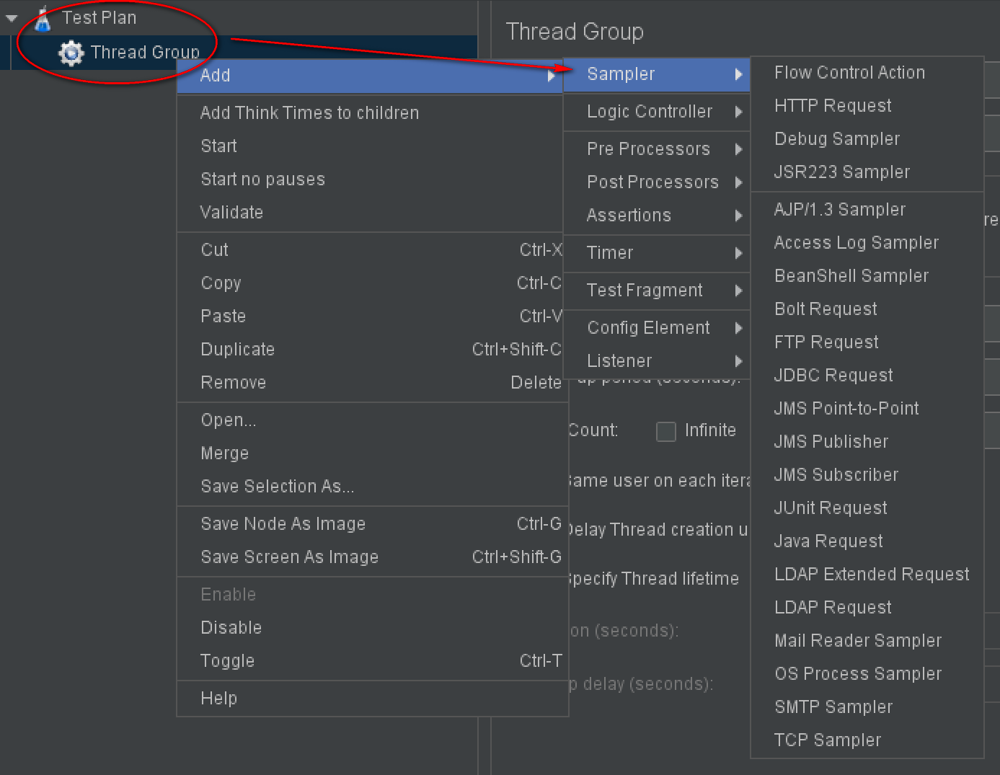
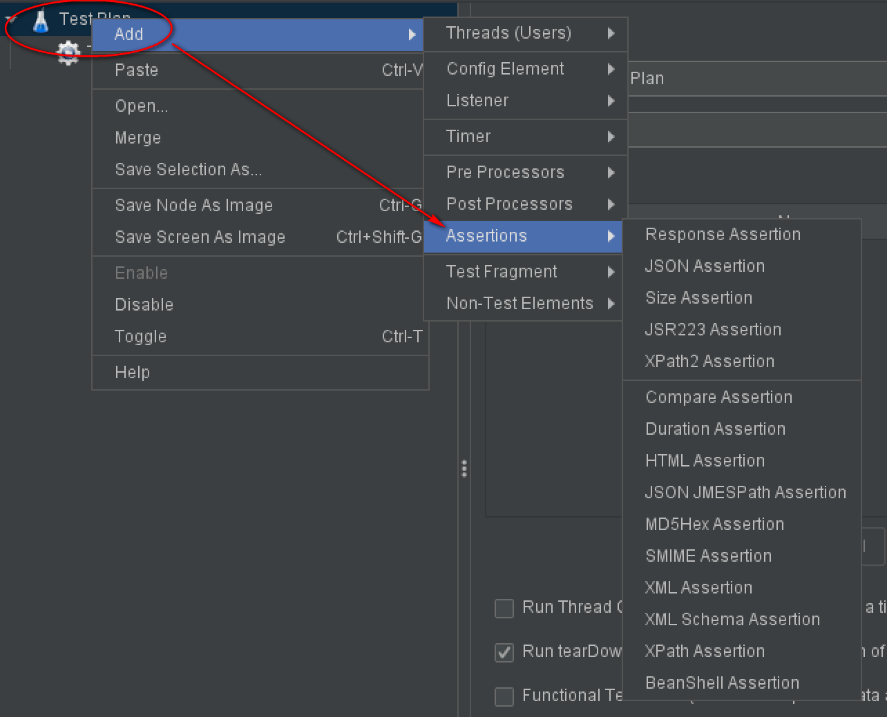
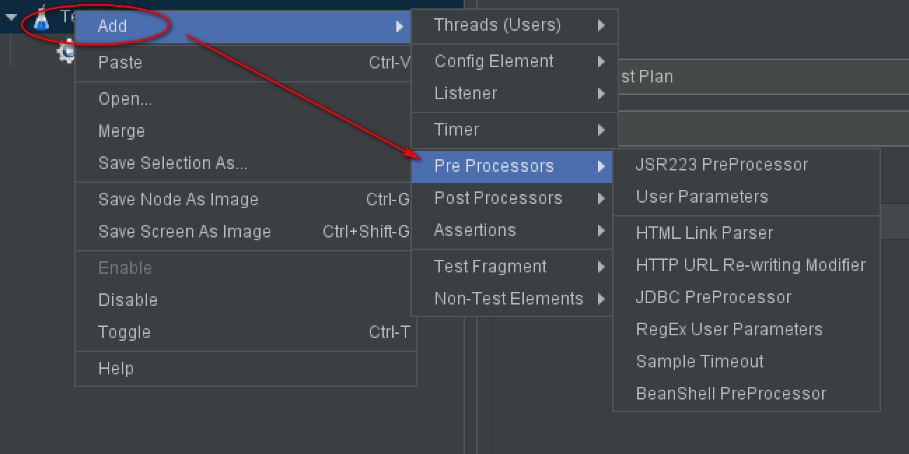

1 12张图打开JMeter体系结构全局视角¶

JMeter是Java技术栈工具，在软件测试领域应用非常广泛，无论是性能测试还是接口测试，技术都很成熟和稳定。它有一个突出特点：开源，适合做二次开发，以阿里为代表的Java技术栈公司都对它青睐有加。在JMeter之前，我最早接触的工具是LoadRunner，毕业后还买过一本《精通软件性能测试与LoadRunner最佳实战》的书，但是它的时代已经过去：

截图为测试开发社区TesterHome讨论帖。
这是JMeter的时代，JMeter系列文章将根据《全栈性能测试修炼宝典JMeter实战》这本书来编写。本文介绍JMeter的组成结构，阅读后对JMeter形成整体认知和初步印象。为了便于后续讲解，先明确下2个术语：
元件：如HTTP请求、事务控制器、响应断言，就是一个元件。
组件：如逻辑控制器，就是组件。组件中包含一个或多个元件。
大的叫组件，小的叫元件，也没那么严谨，你想叫控件都行！先以组件的维度，看一下JMeter结构图：

X、Y、Z形成了一个三维立体空间。
X1~X5表示的是：5个模拟过程。
Y1表示的是：用户请求。
Y2表示的是：结果验证。
Z表示的是：结果收集。
X1【取样器】¶

通过访问 测试计划|线程组|取样器 添加Sampler。
可以把它看做是一个没有界面的浏览器，可以发送请求，接收响应。支持HTTP请求、WebService请求（SOAP/XML-RPC）、Java请求等。涵盖了协议包括HTTP、FTP、JAVA、LDAP、MAIL、MongoDB、SMTP、SOAP、TCP、Junit等。还能写BeanShell脚本，一种类似Java的脚本开发语言。
X1【断言】¶

通过 测试计划|断言 添加Assertions。线程组也能添加断言。
一般用响应断言（Response Assertion）比较多。可以写BeanShell实现自定义复杂断言。
X1【监听器】¶

通过 测试计划|监听器 添加Listener。线程组也可以添加监听器。
可以用于展示结果。如察看结果树（View Results True），查看每次请求和响应。聚合报告（Aggregate Report），类似测试报告。
另外，也可以把测试结果数据保存到文件，供再次分析使用。
X2【前置处理器】¶

通过 测试计划|前置处理器
添加Pre Processors。线程组也可以添加前置处理器。
在发送请求前，需要做一些环境或数据准备，就需要用前置处理器。比如对数据库操作前，需要先建立数据库连接。
X2【配置元件】¶

可以通过 测试计划|配置元件
添加Config Element。线程组也可以添加配置元件。
它的作用是，为取样器提供配置数据。比如使用CSV Data Set Config，从文件中读取测试数据。比如使用函数（函数助手）生成动态数据。比如使用HTTP Cookie Manager，自动记录服务器返回的Cookie信息。比如使用User Defined Variables，预置一些初始化变量。
X2【后置处理器】¶

可以通过 测试计划|后置处理器
添加Post Processors。线程组也可以添加后置处理器。
它的作用是处理响应数据。比如正则表达式提取器（Regular Expression Extractor），使用正则表达式来匹配响应结果，提取部分数据。
X3【逻辑控制器】¶

可以通过 测试计划|线程组|逻辑控制器 添加Logic Controller。
它用来对处理逻辑进行控制。比如只登陆一次，可以用 Once Only Controller 来实现。

Test Fragment¶

可以通过 测试计划|Test Fragment 添加。线程组也可以添加。
可用于临时备份元件，Test Fragment下的元件不会被运行。封装后可被模块控制器调用，就像编程一样。
小结¶
本文从JMeter结构图展开讲解，通过组件截图描绘出了JMeter体系结构。取样器、断言、监听器组合在一起就可以完成发送请求、验证结果和记录结果。前置处理器、配置元件、后置处理器都是为取样器提供数据支持的。逻辑控制器可以实现各种需求。定时器可以设置集合点和等待时间等。JMeter是用线程组来模拟的，一个线程就是一个用户。Test Fragment可以用来备份元件，底下的元件不会被运行。